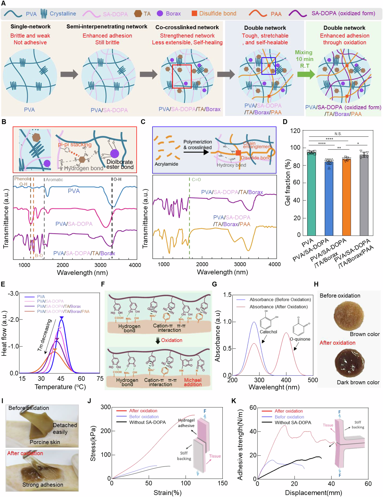

이 연구가 다루는 문제
퀴논을 매개로 젖은 조직과 결합하도록 설계한 이중 네트워크 하이드로젤입니다. 돼지 피부의 접착 시험과 동물의 출혈·절개 모델에서 패치 및 주입 형태의 적용을 평가했습니다.
젖은 조직의 접착과 지혈용 하이드로젤
젖은 조직에는 물이 있고 표면이 불규칙하며 힘을 받으면 움직입니다. STAT은 이러한 조건에서 접촉을 유지하도록 수화된 겔과 조직 결합 화학을 결합합니다. 조직의 모양을 따라가는 것과 하중 속에서 그 접촉을 유지하는 것은 연결되어 있지만 별도의 요구입니다.
어떻게 접근했나요?
이중 네트워크는 퀴논을 매개로 한 조직 결합과 탄닌산 관련 지혈 기능을 함께 활용합니다. 형태 적합성과 접착을 함께 설계한 접근입니다. 적용할 때 별도의 활성화 단계가 없더라도, 준비 과정에서 산화를 제어하지 않는다는 뜻은 아닙니다.

STAT의 네트워크 형성·산화 과정과 구조 분석, 산화 전후 돼지 피부 접착 평가를 함께 보여줍니다.
Tae Young Kim, Kayoung Son, Chang-Hwan Moon 외. “Quinone-mediated, tissue-adaptive double-network hydrogel for instant hemostasis and wet-tissue adhesion”. Figure 2. DOI: 10.1038/s41467-026-72068-6. CC BY 4.0. 그림 내용은 변경하지 않았습니다.
원그림과 원문 설명 ↗ · DOI: 10.1038/s41467-026-72068-6 ↗ · CC BY 4.0 ↗
무엇을 어떻게 평가했나요?
접착 측정은 조직, 수화 상태, 접촉 조건, 하중 방향에 영향을 받습니다. 전단 응력과 박리 에너지는 결합의 서로 다른 특성을 나타냅니다. 동물 출혈 시험은 지혈에 대한 추가 근거이지만 모든 조직의 접착 시험을 대신하지는 않습니다.
주요 결과
산화 전 겔은 돼지 피부에 붙어도 쉽게 떨어졌지만, 산화한 STAT은 제거에 저항했습니다. 전단과 180도 박리 시험 모두 접착 증가를 보여 주어 카테콜의 퀴논 전환과 결합 강화를 연결합니다. 이는 시험한 조직과 조건의 결과이며 모든 조직이나 사람의 수술에서 같은 효과가 입증된 것은 아닙니다.
아직 남아 있는 질문
조직, 접촉 시간, 하중, 겔 상태를 맞춰 비교해야 합니다. 보관, 반복 변형, 장기 조직 반응에는 추가 근거가 필요합니다. 이 설명은 본문의 일부를 바탕으로 하며 보충자료 전체를 검토한 범위가 아니고, 임상 사용 절차를 제안하지 않습니다.
함께 읽을 연구
Dry double-sided tape for adhesion of wet tissues and devices
DOI: 10.1038/s41586-019-1710-5 ↗
출판사 초록은 계면의 물을 흡수한 뒤 공유결합을 형성하는 건조 테이프를 설명합니다. 수화된 STAT과 결합 원리를 비교할 수 있습니다.
초록에 기반한 원리 비교이며, 조직과 모델이 다른 접착 시간이나 지혈 성능을 순위화하지 않습니다.
초록을 참고한 소개RESEARCH NEWS
연구 소식
서정목 교수팀, 젖은 조직에 즉시 접착·지혈하는 이중네트워크 하이드로겔 개발 ↗
연세대, 젖은 조직에도 신속 접착·지혈 소재 개발 ↗
연세대 서정목 교수팀, 젖은 조직에 즉시 접착·지혈하는 하이드로겔 개발 ↗
연세대학교 서정목 교수팀, 10초 만에 젖은 조직 붙이고 출혈 막는 차세대 하이드로겔 개발 ↗
STAT Hydrogel Stops Bleeding in Seconds Without Sutures ↗
Jungmok Seo: A Quinone-Activated Hydrogel for Second-Scale Hemostasis and Suture-Free Surgical Sealing ↗
[연구 프론티어] 서정목 교수팀, 젖은 조직에 즉시 접착·지혈하는 이중네트워크 하이드로겔 개발 ↗
해설에 사용한 자료
본문 19쪽과 원그림, 보충 PDF 23쪽, 영상 설명 1쪽 및 영상 5개의 시간순 주요 장면을 참고했습니다. 보고 양식 3쪽, 공개 심사자료 53쪽과 Source Data 46개 시트도 살펴봤습니다. 긴 수치열은 곡선·범위·대표값을 대조했으며, 모든 숫자 셀의 개별 육안 판독이나 원자료의 독립 재분석은 수행하지 않았습니다.